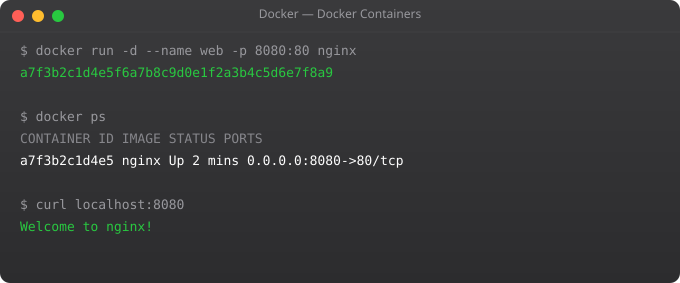

In Part 2 we pulled existing images and ran containers. Now we go one step further — we will write our own Dockerfile and build custom images. This is where Docker transforms from a curiosity into a real tool you can use in projects.
A Dockerfile is a plain text file with a specific name (literally Dockerfile — no extension) that contains instructions for building a Docker image. Think of it as a recipe. Each instruction in the Dockerfile creates a new layer in the image. When you run docker build, Docker reads the Dockerfile and executes each instruction in order, building your custom image layer by layer.
The beauty of a Dockerfile is reproducibility. Anyone with your Dockerfile can build the exact same image on any machine. No more "it works on my computer" excuses.
Let us start with a simple but real example — containerizing a Python web application:
# Start from an official Python base image
FROM python:3.11-slim
# Set working directory inside the container
WORKDIR /app
# Copy requirements file first (for layer caching)
COPY requirements.txt .
# Install Python dependencies
RUN pip install --no-cache-dir -r requirements.txt
# Copy the rest of your application code
COPY . .
# Tell Docker which port the app uses
EXPOSE 5000
# Command to run when container starts
CMD ["python", "app.py"]python:3.11-slim is an official Python image with a minimal footprint.-p.Create a directory, add the Dockerfile, and build:
# Build image with a tag (name:version)
docker build -t my-python-app:1.0 .
# The dot (.) means use current directory as build context
# Docker sends all files in this directory to the Docker daemon
# List your images
docker imagesYou will see Docker executing each step, printing layer IDs. After the build completes, your custom image appears in the list with the tag you gave it.
Every instruction in a Dockerfile creates a layer. Layers are cached. This is important because it directly affects how fast your builds are. Docker checks each layer — if the instruction and its context have not changed since the last build, Docker reuses the cached layer instead of rebuilding it.
This is why we copy requirements.txt first and install dependencies before copying the rest of the code. Dependencies change infrequently. Your application code changes constantly. If we copied everything together first, every code change would invalidate the dependency installation layer, forcing Docker to reinstall packages on every build. By separating them, we only reinstall dependencies when requirements.txt actually changes.
Smaller images build faster, push and pull faster, and reduce attack surface. Here are key techniques:
# Use slim or alpine variants
FROM python:3.11-slim # smaller than python:3.11
FROM python:3.11-alpine # even smaller but may need extra packages
# Combine RUN commands to reduce layers
RUN apt-get update && apt-get install -y curl git && rm -rf /var/lib/apt/lists/*
# Clean up in the same layer where you install
RUN pip install --no-cache-dir -r requirements.txtThe --no-cache-dir flag tells pip not to store downloaded packages locally, reducing image size. Combining multiple apt-get commands into one RUN instruction with && reduces the number of layers.
Just like .gitignore, a .dockerignore file tells Docker which files to exclude from the build context. This prevents large or sensitive files from accidentally being added to the image.
__pycache__/
*.pyc
*.pyo
.git/
.env
node_modules/
*.log
README.mdYou can define variables in your Dockerfile using ENV (environment variables available at runtime) and ARG (variables available only during build time):
# Build-time variable
ARG APP_VERSION=1.0
# Runtime environment variable
ENV APP_PORT=5000
ENV ENVIRONMENT=production
# Use them
EXPOSE $APP_PORT
RUN echo "Building version $APP_VERSION"# Run with port mapping
docker run -d -p 5000:5000 --name my-app my-python-app:1.0
# Run with environment variable override
docker run -d -p 5000:5000 -e ENVIRONMENT=dev my-python-app:1.0
# Run with volume mount (for development)
docker run -d -p 5000:5000 -v $(pwd):/app my-python-app:1.0In Part 4, we will learn Docker Volumes — how to persist data across container restarts, which is essential for databases and stateful applications.
One of the most powerful Dockerfile features is multi-stage builds — using multiple FROM instructions in a single Dockerfile. The pattern is: use a large build image with all development tools to compile your application, then copy only the built artifacts into a small runtime image. This produces final images that are dramatically smaller and contain no build tools that could be a security risk:
# Stage 1: Build
FROM node:18 AS builder
WORKDIR /app
COPY package*.json ./
RUN npm ci
COPY . .
RUN npm run build
# Stage 2: Runtime (only what's needed to run)
FROM node:18-alpine AS runtime
WORKDIR /app
COPY --from=builder /app/dist ./dist
COPY --from=builder /app/node_modules ./node_modules
EXPOSE 3000
CMD ["node", "dist/index.js"]The --from=builder syntax copies files from the named build stage. The final image contains only Alpine Linux, Node runtime, and your built application — no npm, no build tools, no source code. This pattern routinely reduces image sizes by 60-80%.
Use specific base image tags rather than latest for reproducibility. Order instructions from least to most frequently changing — dependencies before application code — to maximize layer cache effectiveness. Use .dockerignore to exclude unnecessary files from the build context. Combine related RUN commands with && to reduce layer count. Run as a non-root user by creating a dedicated user in the Dockerfile. Scan images for vulnerabilities using docker scout or Trivy before deploying to production.
Write a Dockerfile for a simple web application of your choice (a Python Flask app, Node Express app, or static site). Build it, run it, verify it works, then check the image size with docker images. Then convert it to a multi-stage build and compare the final image size. The reduction should be substantial for compiled languages and measurable even for interpreted languages.